Fishing Guide
Fishing is one of the gathering skills where you catch fish. Like woodcutting, fishing is a really relaxing skill where you can set up netflix or just chat with friends while staying mainly in one spot. Just as trees get chopped down and you move to the next. Fishing spots do the same by moving around every once in awhile.
Crayfish Cage

Crayfish cages are used to catch crayfish inside of 2009scape. They can be bought from Gerrant's Fishy Business in Port Sarim for a few gold coins.
Small fishing nets 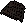
Small fishing nets are are used to catch a range of fish from Shrimp, Anchovies, Karambwanji and even Monkfish. They can be bought from a wide variety of shops listed here : Arnold's Eclectic Supplies, Fremennik Fishmonger, Gerrant's Fishy Business, & Harry's Fishing Shop.
Big fishing nets 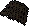
Big fishing nets are only found in Harry's Fishing Shop in Catherby. Big fishing nets can be used on spots that say net/harpoon. Can catch Mackerel, Cod, Bass, Casket, Leather Boots, Leather Gloves, Oyster, and Seaweed.
Fish Rods 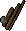
Fishing rods are used to catch fish in both rivers and seas. They do require the use of fishing bait that can be purchased in any of the fishing shops in 2009scape. They are used to catch a range of fish from Sardine, Herring, & Pike.
Fly Fishing Rods 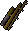
Fly Fishing rods are used to catch fish using feathers as bait. Feathers are dropped by chicken. You need to use a striped feather in order to catch rainbow fish at 38 fishing normally around the barbarian village. Fly fishing can be used to catch Trout and Salmon which is the fastest training method in the game.
Lobster Pots 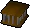
Lobster Pots are used to catch Lobsters inside of 2009scape. They can be purchased from most of the fishing stores like Port Sarim and Catherby. A popular lobster fishing spot is inside of Catherby since there is a range near by to cook them with a bank close by as well.
Harpoons 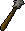Harpoons are used to catch a variety of fish and used for mid level fishing. Harpoons can be bought from Catherby and Port Sarim. They are used to catch tuna, swordfish and shark. The most popular spot for catching sharks is in the fishing guild.
Vessel 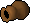The vessels are used to catch Karambwan using Karambwanji as bait. It requires 65 fishing in order to use and normally requires the Tai Bwo Wannai quest in order to purchase.
| Type of Fish |
Level needed |
Tool Needed |
Crayfish  |
Level 1 |
Crayfish Cage |
Shrimp  |
Level 1 |
Small Fishing Net |
Sardine  |
Level 5 |
Fishing Rod |
Karambwanji  |
Level 5 |
Small Fishing Net |
Herring  |
Level 10 |
Fishing Rod |
Anchovies  |
Level 15 |
Small Fishing Net |
| Herring |
Level 10 |
Fishing Rod |
Mackerel  |
Level 16 |
Big Fishing Net |
Trout  |
Level 20 |
Fly Fishing Rod |
Cod  |
Level 23 |
Big Fishing Net |
Salmon  |
Level 30 |
Fly Fishing Rod |
Tuna  |
Level 35 |
Harpoon |
| Rainbow Fish 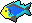 | Level 38 |
Fly Fishing Rod |
Lobster  |
Level 40 |
Lobster Cage |
Bass  |
Level 46 |
Big Fishing Net |
Swordfish  |
Level 50 |
Harpoon |
| Monkfish 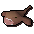 | Level 62 |
Small Fishing Net |
Karambwan  |
Level 65 |
Vessel |
Shark  |
Level 76 |
Harpoon |
Yes! Barbarian fishing is in 2009scape, but as of July 2021, it is not completely complete. As of right now we just
have the barbarian rod fishing. We do not have barehanded fishing
To get started talk to Otto in his house, there will be a bit of dialogue talking about how you can find the rod underneath his bed.
Bring some feathers and a knife with you. In 2009scape, there is 100% chance of offcuts which means you only need one inventory worth
of feathers and after that you can use the offcuts as bait. Yes! there is tick manipulation, so if you are into this it is implemented.
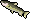 Leaping trout require 15 agility, 15 strength and 48 fishing in order to catch them.
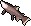 Leaping salmon require 30 agility, 30 strength and 58 fishing in order to catch them.
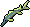 Leaping sturgeon require 45 agility, 45 strength and 70 fishing in order to catch them.
Fishing Trawler
Fishing Trawler is a fishing minigame run by Murphy in Port Khazard. You will need level 15 fishing in order to play the game and reap the rewards. Learn more about Fishing Trawler here.
Fishing Familiars
Summoning mixes well into every skill and some familiars along the way can help you forage for more fish or even
boosts your levels so you can fish other fish!
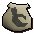
Granite Crab ( Level 16  ) - The granite crab grants an invisible +1 Fishing boost and
can forage cod, pike, seaweed and oysters while you are fishing. Granite crabs can store up to 30 extra fish.
) - The granite crab grants an invisible +1 Fishing boost and
can forage cod, pike, seaweed and oysters while you are fishing. Granite crabs can store up to 30 extra fish.

Ibis ( Level 56  ) - The Ibis grants an invisible +3 Fishing boost and
can forage tuna and swordfish while you are fishing. Ibis can store up to 30 extra fish.
) - The Ibis grants an invisible +3 Fishing boost and
can forage tuna and swordfish while you are fishing. Ibis can store up to 30 extra fish.
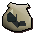
Granite Lobster ( Level 74  ) - The Ibis grants an invisible +3 Fishing boost and random chance to forage for
raw swordfish and raw sharks, even if the player does not have the necessary level to catch these fish. Ibis can store up to 30 extra fish.
) - The Ibis grants an invisible +3 Fishing boost and random chance to forage for
raw swordfish and raw sharks, even if the player does not have the necessary level to catch these fish. Ibis can store up to 30 extra fish.
Fishing Boosts
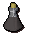
Fishing Potion - Fishing potions temporarily raise a player's Fishing level by 3; fishing level drops by 1 each minute.
In 2009scape, we had decided in the polls that we would add Skill Cape Perks in the game. You are able to find more perks by clicking here. It has been decided that the Agility Skill Cape that would have the following perk: With your body in peak physical condition, while wearing your cape, your run energy drains 25% slower.
Note: If you see something not on this page that currently is in-game please let Summer know.